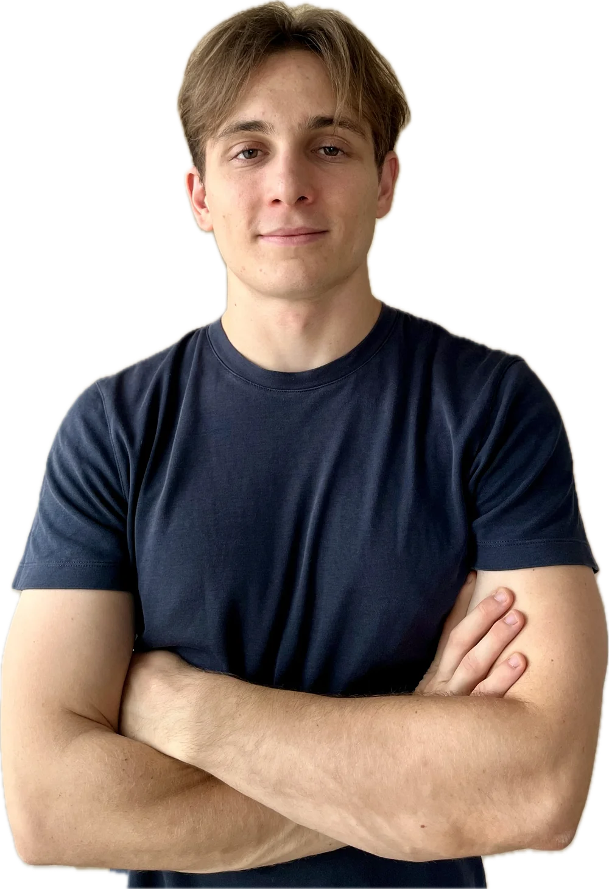

01
Gestione del dolore
Trattamento di tensioni muscolari e disagi articolari comuni, come cervicalgie e lombalgie aspecifiche.

Credo in un’osteopatia moderna, lontana dai miti e vicina alla ricerca. Nel mio lavoro, la salute è un obiettivo clinico da costruire insieme attraverso tecniche manuali basate su basi scientifiche aggiornate.
Il mio compito è integrare l'esperienza clinica con ciò che la letteratura ritiene più affidabile. Senza promesse miracolose, ma con la consapevolezza dei limiti fisiologici di ogni trattamento, mi impegno a offrirti un approccio trasparente e sicuro.
Il fine ultimo è il recupero della tua migliore condizione possibile, per favorire il ritorno alle attività quotidiane e sportive, rispettando i tempi e le possibilità del tuo corpo.
Trattamento di tensioni muscolari e disagi articolari comuni, come cervicalgie e lombalgie aspecifiche.
Interventi volti a migliorare la mobilità e la distribuzione dei carichi per favorire il recupero funzionale.
Supporto nella gestione dei sovraccarichi legati all'attività, collaborando con le figure professionali di riferimento per il mantenimento della performance.
L’osteopatia è una pratica complementare e non sostituisce i percorsi medici o riabilitativi. La valutazione iniziale è volta a escludere competenze non osteopatiche: in tal caso, sarà mia cura indirizzare il paziente verso il professionista sanitario più idoneo. Intervengo esclusivamente dove la letteratura scientifica riconosce alla terapia manuale un ruolo nel favorire i processi fisiologici, nel pieno rispetto dei limiti clinici.
Studi del Centro
Sportivo Robilant
P.za Carlo di Robilant 16, Torino (TO)
Disponibile anche a domicilioLunedì – Venerdì
08:00
20:00
Si riceve su appuntamento
Per info o per fissare un appuntamento, scrivimi o chiamami al
+39 331 328 9664